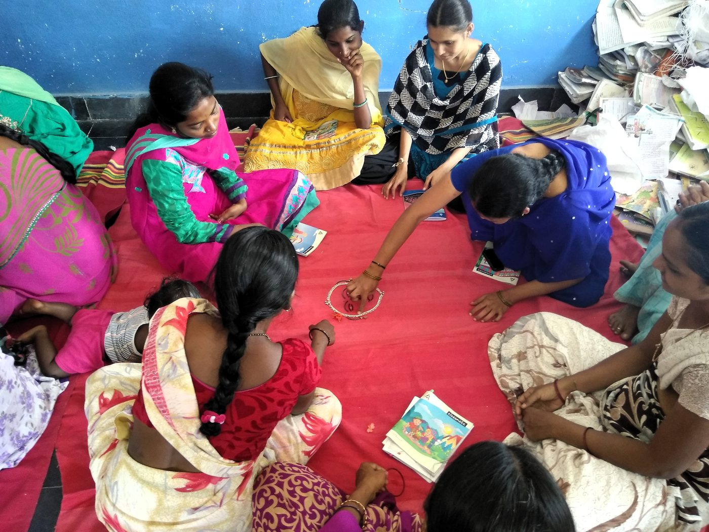
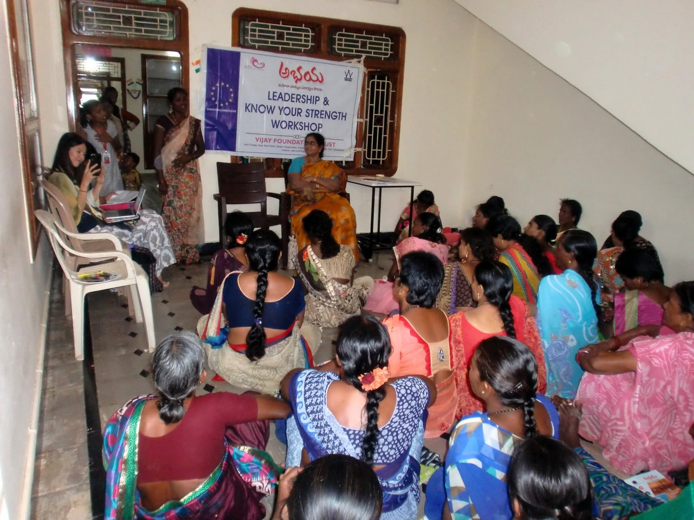

She who dares, soars.
Most women who come to the Women's Centre have never earned money of their own. That is usually the thing that has to change first.
Empower a Woman
What we have done so far
employability training
skill-building workshops
awareness workshops
sensitisation workshops

Impact on the community
Our first livelihood training programme ran in 2000. It taught a useful skill and it was not enough. Women who took part were talked about in their neighbourhoods, and some were stopped from working by their own families.
So the programme grew to cover the rest of it. Somewhere to learn a trade, somewhere to sell the work, other women in the same position, and enough standing in the community that turning up is not itself a scandal. Twenty-five years on, we are still adding to it.
Meet the women of Aarti
Most of what we know about this work, we learned from the women who came through it.
— Nilofer, Aarti Women’s Centre“My story started when my father sold my textbooks to buy notebooks for my brother. Uneducated and dependent on my husband, I wanted to do something for myself. When I heard Aarti was starting a tailoring program, I enrolled.
There was a big backlash — as I came home with ₹50 a day, people started asking if I was selling myself. Sandhyamma came to our basti and spoke with the community elders. I persisted while many who joined with me dropped out, and I soon became a good tailor and joined the collective.”
Our programs
A trade is the centre of it. The rest of these exist because a trade on its own kept not being enough.
Skill Building
For women with little or no schooling. Tailoring and fashion design, beautician work, embroidery, handicrafts and toy-making, fabric painting, block printing. Taught by our own master trainers.
Employability
For women who have the qualifications but have never been inside an office. How to write an application, how to sit an interview, how to talk to people who are used to being deferred to.
Soft Skills
Many of the women who reach us have spent their lives inside the house, with little say in anything outside it. These sessions cover what nobody taught them. How to speak to an employer. How to handle a bank counter. How to read a bus route.
Computer Literacy
Getting used to a keyboard and a mouse, and then to the internet. Filling in forms, looking for work, keeping in touch, moving money without having to ask a relative to do it.
Financial Literacy
Earning money and keeping hold of it are two different problems. Budgeting, saving, running a bank account, and spotting a loan designed to trap you. The point is that what she earns stays hers and does not get signed over to a husband or a moneylender.
Legal Awareness
Most women who walk through our doors have never been told what the law owes them. These workshops go through it plainly: which protections exist, which laws they can lean on, and who to go to if they are being hurt at home or at work.
Psychological Workshops
Some of what women arrive carrying cannot be trained away. These sessions run with counsellors, and exist so that anxiety, depression and the aftermath of abuse can be said out loud somewhere it will not be repeated.
Gender Sensitisation
We run these in schools across Kadapa district, for boys as much as girls. The exercise that works is Reverse Roles, where children act out the parts normally handed to the opposite gender. It gets further in an afternoon than a term of being told about equality.
Women Empowerment Program
Run with the Women Entrepreneurship Platform. The centres are aimed at younger women who want to start something of their own.
Scroll for more →
Help a woman stand on her own
Your support pays for six months of training, and the sewing machine or the kit she needs at the end of it.
Empower a Woman ↗